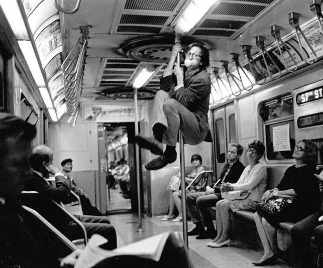

Harry Benson R Crumb on the Subway, New York City 1968
“I was totally amazed. This little home made underground comix thing was turning into a business before my eyes. It went from us going around Haight Street trying to sell these things we had folded and stapled ourselves to suddenly being a business with distributors, lawyers, contracts, and money talk. … The whole thing began to take on a heaviness that I believe had a negative effect on my work. I was only twenty-five years old when all this happened. It was a case of ‘too much too soon,’ I think. I became acutely self-conscious about what I was doing. Was I now a ‘spokesman’ for the hippies or what? I had no idea how to handle my new position in society! … Take Keep On Truckin’… for example. Keep on Truckin’… is the curse of my life. This stupid little cartoon caught on hugely. … I didn’t want to turn into a greeting card artist for the counter-culture! I didn’t want to do ‘shtick'—the thing Lenny Bruce warned against. That’s when I started to let out all my perverse sex fantasies. It was the only way out of being ‘America’s Best Loved Hippie Cartoonist.’” R Crumb